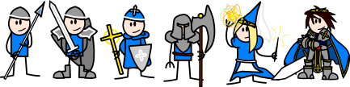
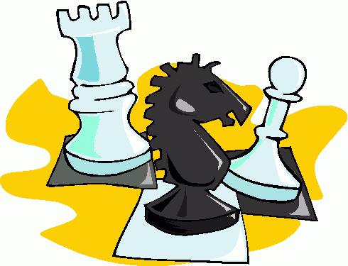
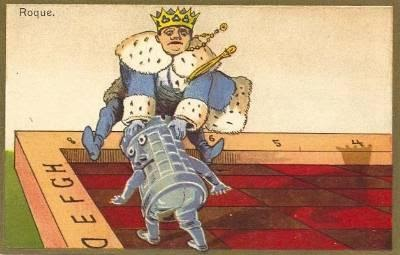
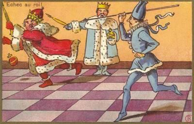
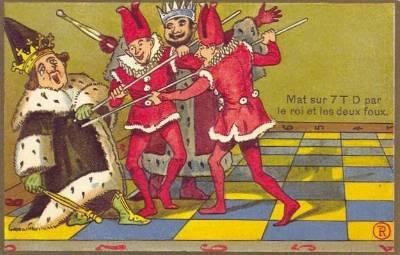

El tablero de ajedrez es el escenario de la batalla, está compuesto por 64 cuadros o casillas. Cada lado del tablero tiene, por lo tanto, ocho casillas (8 x 8 = 64).
|

|
Las piezas se dividen, por convención, en blancas y negras. A los jugadores se les conoce como "Blanco" y "Negro", y cada uno comienza el juego con dieciséis piezas de su color: un rey, una dama, dos torres, dos alfiles, dos caballos y ocho peones. |
 |
Las blancas mueven siempre en primer lugar y a continuación los jugadores van jugando alternativamente una pieza cada vez (con la excepción del enroque, en el que se mueven dos piezas al mismo tiempo). Las piezas se mueven ya sea a una casilla libre, o una ocupada por una pieza del oponente, que es capturada y retirada del tablero. |
 |
Una vez en cada partida, a cada rey se le permite hacer un movimiento especial, conocido como enroque.
Consiste en cruzar la torre con el rey moviendo el rey dos casillas en la primera fila y colocando la torre al otro lado del rey. |
 |
Cuando un rey está bajo ataque inmediato por una o varias de las piezas del oponente, se dice que está en jaque. Las únicas respuestas permitidas a un jaque son:
- Capturar la pieza que da jaque
- Interponer una pieza entre la pieza que da jaque y el rey (a menos que la pieza atacante sea un caballo)
- Mover el rey a una casilla donde no está atacada.
|
 |
El objetivo del juego es dar jaque mate, lo que ocurre cuando el rey es amenazado con ser capturado (jaque) y no puede evitarlo de ninguna manera.
La partida no siempre termina en jaque mate:
- cualquier jugador puede rendirse si la situación parece desesperada.
- Si se trata de una cronometrada, un jugador puede quedarse sin tiempo y perder, incluso con una posición muy superior.
- Los juegos también pueden terminar en un empate (tablas).
|
 |
|